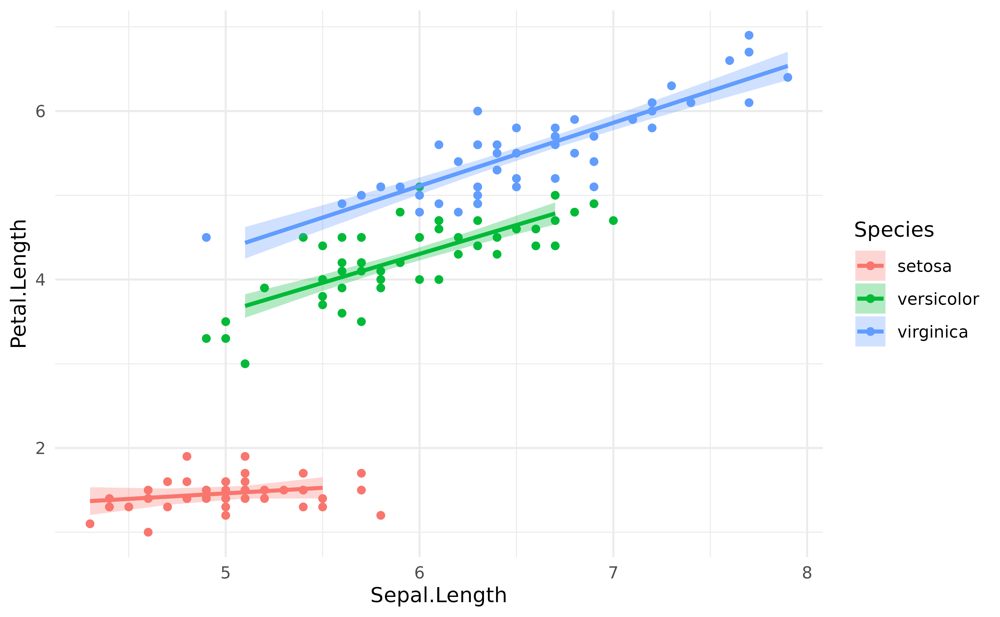

Prediction against original data
Generating prediction from the model can be used for a wide variety
of reasons, one of them being visualisation. This can be achieved via
the estimate_expectation() function and its visualisation
spinoff, estimate_relation().
Let’s start by fitting a linear regression.
library(modelbased)
model <- lm(Petal.Length ~ Sepal.Length, data = iris)We might be interested in comparing the values predicted by the model to the actual “true” values. This can be done by generating predictions:
pred_data <- estimate_expectation(model)
head(pred_data)> Model-based Predictions
>
> Sepal.Length | Predicted | SE | 95% CI | Residuals
> ----------------------------------------------------------
> 5.10 | 2.38 | 0.10 | [2.19, 2.57] | -0.98
> 4.90 | 2.00 | 0.11 | [1.79, 2.22] | -0.60
> 4.70 | 1.63 | 0.12 | [1.39, 1.87] | -0.33
> 4.60 | 1.45 | 0.13 | [1.19, 1.70] | 0.05
> 5.00 | 2.19 | 0.10 | [1.99, 2.39] | -0.79
> 5.40 | 2.93 | 0.08 | [2.78, 3.09] | -1.23
>
> Variable predicted: Petal.LengthThe output is a data frame containing predicted values (the median
and CI of the posterior distribution) for each of the value of
the original data frame (used for fitting the model). Hence, we
can simply add the original response column (Petal.Length)
to this data and plot the original against the predicted data (on top of
the identity line, representing the perfect relationship).
library(ggplot2)
pred_data$Petal.Length <- iris$Petal.Length
pred_data |>
ggplot(aes(x = Petal.Length, y = Predicted)) +
geom_line(aes(x = Petal.Length, y = Petal.Length), linetype = "dashed") +
geom_point() +
ylab("Petal.Length (predicted)") +
theme_minimal()It seems like our model does not perform too bad. What if we added
information about the Species in the model?
model <- lm(Petal.Length ~ Sepal.Length * Species, data = iris)
pred_data$Predicted_2 <- estimate_expectation(model)$PredictedWe could now plot the second observations, based on a more complex model, as a red overlay to the previous points:
pred_data |>
ggplot() +
geom_line(aes(x = Petal.Length, y = Petal.Length), linetype = "dashed") +
geom_point(aes(x = Petal.Length, y = Predicted), color = "grey") +
geom_point(aes(x = Petal.Length, y = Predicted_2), color = "red") +
ylab("Petal.Length (predicted)") +
theme_minimal()
The new model generated much more accurate predictions (closer from the underlying regression line).
Estimating response vs. relation
Rather than visualizing the predictions made by a model, we are often interested in visualizing the relation. In the model above, this would be the relationship between the response and the two predictors. This can be achieved by generating the predictions on the data grid of the model’s data instead of the original dataset.
We will do that to visualise the relationship between the response
(Petal.Length) and the predictors
(Sepal.Length and Species).
predicted <- estimate_expectation(model, data = "grid")
iris |>
ggplot(aes(x = Sepal.Length)) +
geom_point(aes(y = Petal.Length, color = Species)) +
geom_ribbon(data = predicted, aes(ymin = CI_low, ymax = CI_high, fill = Species), alpha = 0.3) +
geom_line(data = predicted, aes(y = Predicted, color = Species), linewidth = 1) +
theme_minimal()
However, you might notice that the Credible Interval (CI)
bands are quite big. This is where
estimate_relation() is coming in. In a traditional,
frequentist, regression, the predictions are deterministic: they will
always fall on the regression line. However, in a Bayesian framework,
they are probabilistic. Hence here, predicting the response is not the
same that predicting the link (i.e., the
regression line and the uncertainty interval associated with this
line).
In order to facilitate visualization of links, we added
estimate_relation() as a shortcut to
estimate_expectation() with data = "grid" and,
for Bayesian models, predict = "link" and some smoothing by
default. estimate_expectation() would be used in the
context of generating actual predictions for the existing or new data,
whereas estimate_relation() is more relevant in the context
of visualization and plotting.
predicted <- estimate_relation(model)
iris |>
ggplot(aes(x = Sepal.Length)) +
geom_point(aes(y = Petal.Length, color = Species)) +
geom_ribbon(data = predicted, aes(ymin = CI_low, ymax = CI_high, fill = Species), alpha = 0.3) +
geom_line(data = predicted, aes(y = Predicted, color = Species), linewidth = 1) +
theme_minimal()
Different CI levels
The purpose of CI bands is to provide information about the uncertainty related to the estimation. In the Bayesian framework, the credible intervals are directly related to the shape of the posterior distribution. Thus, showing different CI levels (for instance, 69%, 89% and 99%).
predicted <- estimate_relation(model, ci = c(0.69, 0.89, 0.99))
iris |>
ggplot(aes(x = Sepal.Length)) +
geom_point(aes(y = Petal.Length, color = Species)) +
geom_ribbon(data = predicted, aes(ymin = CI_low_0.99, ymax = CI_high_0.99, fill = Species), alpha = 0.2) +
geom_ribbon(data = predicted, aes(ymin = CI_low_0.89, ymax = CI_high_0.89, fill = Species), alpha = 0.3) +
geom_ribbon(data = predicted, aes(ymin = CI_low_0.69, ymax = CI_high_0.69, fill = Species), alpha = 0.3) +
geom_line(data = predicted, aes(y = Predicted, color = Species), linewidth = 1) +
theme_minimal()
Adding individual iterations
Let’s now fit the same model under the Bayesian framework.
Note: If you’re not familiar with the Bayesian framework, we recommend starting with this gentle introduction.
library(rstanarm)
model <- stan_glm(Petal.Length ~ Sepal.Length * Species,
refresh = 0, seed = 3,
data = iris
)The refresh and seed arguments are included
for reproducibility and readability, but they are not critical to the
model.
Instead (or in addition to) representing confidence intervals, one can also represent every individual posterior draw, which correspond to a random selection of all possible links compatible with the observed data. It is a nice insight into the “true” underlying probabilities.
# Keep only 100 draws (keeping all the draws is slower)
predicted <- estimate_relation(model, keep_iterations = TRUE, iterations = 100)
# Format draws for plotting
iterations <- bayestestR::reshape_iterations(predicted)
iterations$group <- paste0(iterations$iter_group, iterations$Species)
iris |>
ggplot(aes(x = Sepal.Length)) +
geom_point(aes(y = Petal.Length, color = Species)) +
geom_line(data = iterations, aes(y = iter_value, color = Species, group = group), alpha = 0.1) +
geom_line(data = predicted, aes(y = Predicted, color = Species), linewidth = 1) +
theme_minimal()
Note that it is also possible to obtain similar plots without Bayesian models, by bootstrapping the predictions. This can be done by setting the iterations argument to some number (e.g., 50).
model <- lm(Petal.Length ~ Sepal.Length * Species, data = iris)
# Bootstrap with n=50 iterations
predicted <- estimate_relation(model, keep_iterations = TRUE, iterations = 50)
# Format draws for plotting
iterations <- bayestestR::reshape_iterations(predicted)
iterations$group <- paste0(iterations$iter_group, iterations$Species)
p <- iris |>
ggplot(aes(x = Sepal.Length)) +
geom_point(aes(y = Petal.Length, color = Species)) +
geom_line(data = iterations, aes(y = iter_value, color = Species, group = group), alpha = 0.1) +
geom_line(data = predicted, aes(y = Predicted, color = Species), linewidth = 1) +
theme_minimal()
p